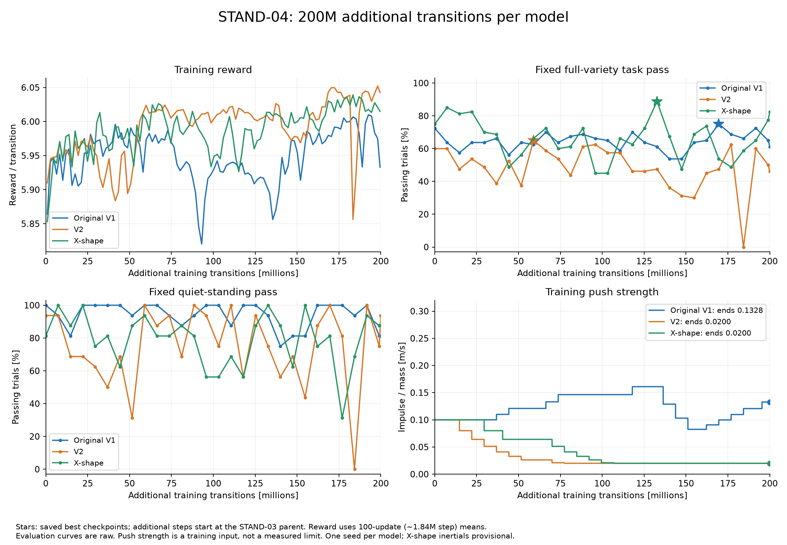
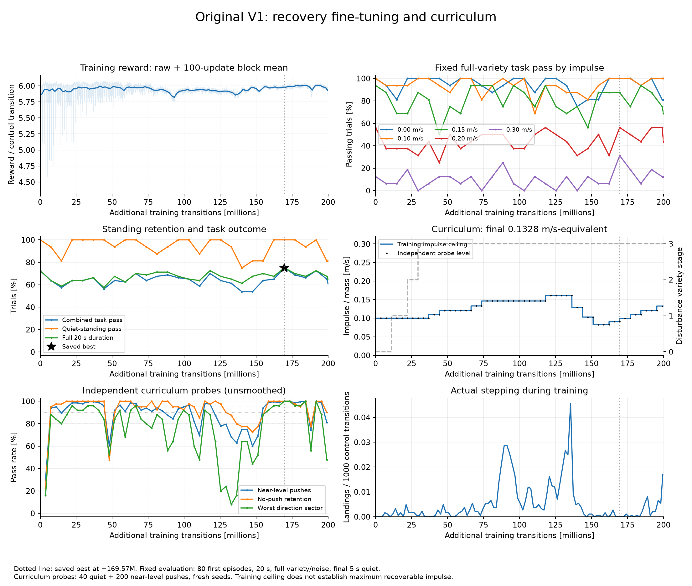
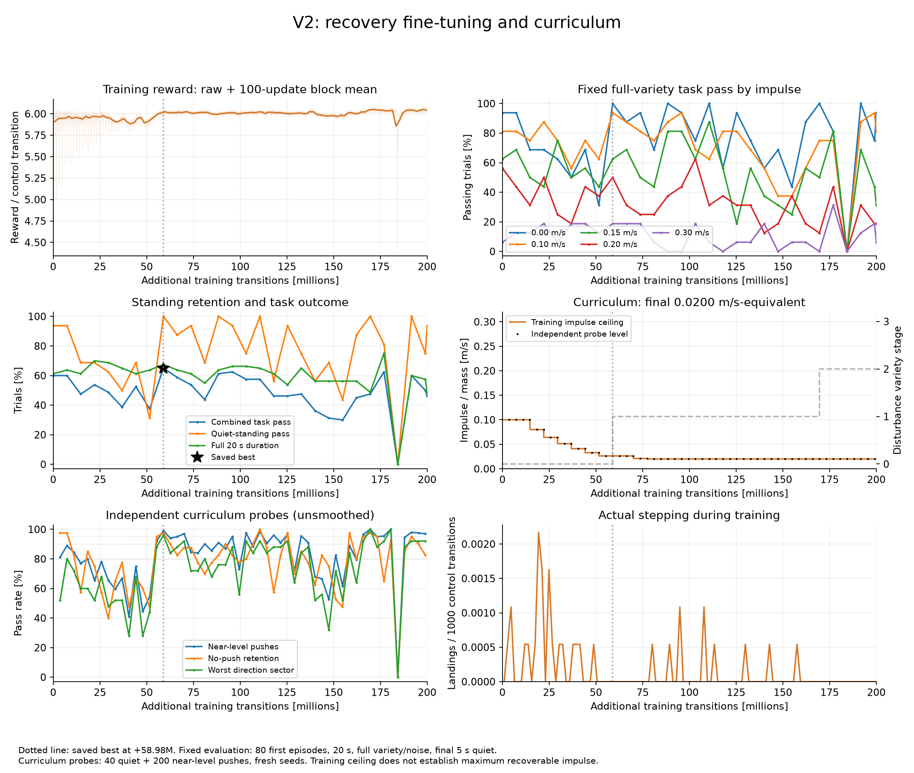
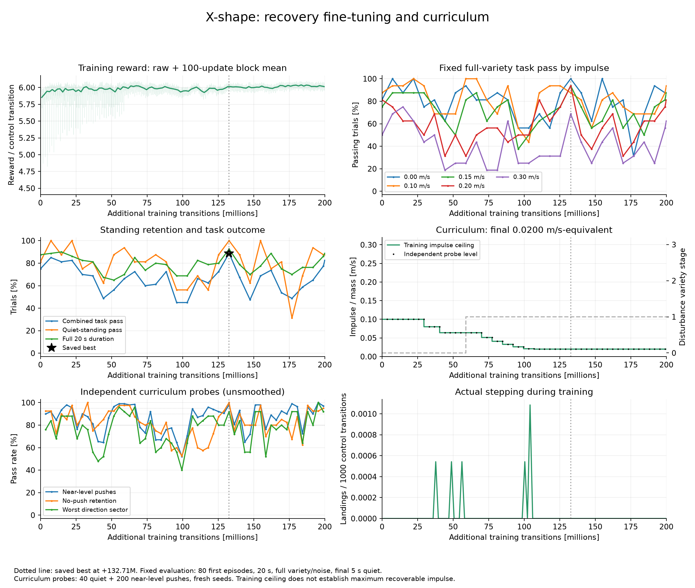

All three runs completed 200,005,632 additional transitions. Videos use saved best checkpoints; the final policies are weaker. Scores use the new final-standing protocol, not STAND-03's earlier protocol. Full raw results and provenance are retained in the report folder.
Units are equivalent velocity impulse Δv = impulse / robot mass, not commanded walking speed. Final curriculum strength differs from the level at the earlier best checkpoint. Neither value is a demonstrated maximum recoverable push.
| Model | Final training level | Impulse / force for 100 ms | Final variety stage | Level at saved best | Best full-variety test |
|---|---|---|---|---|---|
| Original V1 | 0.1328 m/s | 1.906 N·s / 19.06 N | 3: Add COM offsets | 0.0998 m/s | 60/80 |
| V2 | 0.0200 m/s | 0.292 N·s / 2.92 N | 2: Add elevation | 0.0262 m/s | 52/80 |
| X-shape | 0.0200 m/s | 0.291 N·s / 2.91 N | 1: Random timing/duration | 0.0200 m/s | 71/80 |
Forces are illustrative for a 100 ms pulse at the final upper level; actual pulse duration is randomized and training also samples easier pushes. Stages: 0 horizontal COM pulses; 1 random timing/duration; 2 adds elevation; 3 adds COM offsets. Fixed checkpoint tests always use stage 3, irrespective of the training stage reached.
Experiment and metric definitions · Push-level CSV · Comparison PDF

Starting policy 58/80; saved best 60/80; final 49/80. Quiet standing at saved best: 16/16.
Independent replay: 59/80 (archive 60/80). Selected trials: quiet: PASS, 20.00 s, 0 landings; pushed: FAIL, 6.90 s, 0 landings.
Archived passing trials with at least one detected whole-foot landing: 0/60. Allowing recovery steps does not establish that a policy learned them.
Two independent, preselected trials: quiet standing (left), +X 0.20 m/s-equivalent impulse (right), with stage-3 random onset, duration, elevation and torso offsets. Actual pulse timing is shown. Blue/orange identify left/right feet; 20 s at 1×. An ended trial freezes with an explicit warning; no resets are spliced.
Vector PDF
Starting policy 48/80; saved best 52/80; final 37/80. Quiet standing at saved best: 16/16.
Independent replay: 52/80 (archive 52/80). Selected trials: quiet: PASS, 20.00 s, 0 landings; pushed: FAIL, 6.80 s, 0 landings.
Archived passing trials with at least one detected whole-foot landing: 0/52. Allowing recovery steps does not establish that a policy learned them.
Two independent, preselected trials: quiet standing (left), +X 0.20 m/s-equivalent impulse (right), with stage-3 random onset, duration, elevation and torso offsets. Actual pulse timing is shown. Blue/orange identify left/right feet; 20 s at 1×. An ended trial freezes with an explicit warning; no resets are spliced.
Vector PDF
Starting policy 60/80; saved best 71/80; final 66/80. Quiet standing at saved best: 16/16.
Independent replay: 72/80 (archive 71/80). Selected trials: quiet: PASS, 20.00 s, 0 landings; pushed: PASS, 20.00 s, 0 landings.
Archived passing trials with at least one detected whole-foot landing: 2/71. Allowing recovery steps does not establish that a policy learned them.
Two independent, preselected trials: quiet standing (left), +X 0.20 m/s-equivalent impulse (right), with stage-3 random onset, duration, elevation and torso offsets. Actual pulse timing is shown. Blue/orange identify left/right feet; 20 s at 1×. An ended trial freezes with an explicit warning; no resets are spliced.
Vector PDF